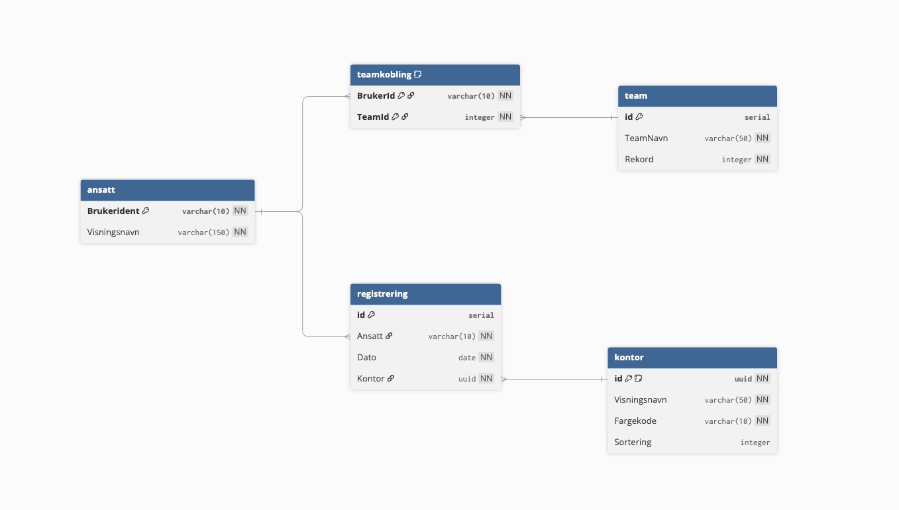
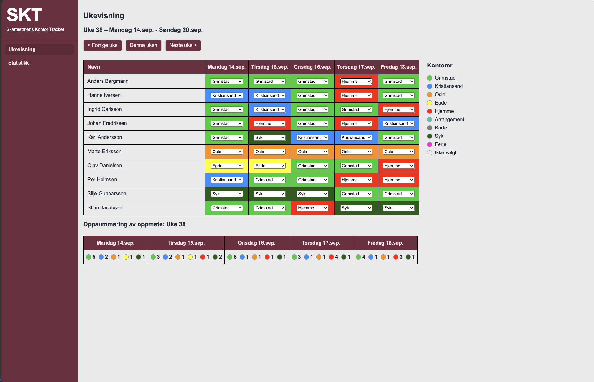

Status 1
Jeg har hatt en veldig god oppstart i praksisperioden. Gjennom møte med Svein og August fikk jeg en god forståelse for oppgaven og hvordan jeg skulle løse den. Det var mange ulike fremgangsmåter de hadde lagt frem for meg, og veiledet meg til å velge det som var best egnet for oppgaven. Selv med mange nye verktøy og teknologier føler jeg at jeg har fått en god forståelse for hvordan det fungerer.
Ettersom Macbooken jeg skulle bruke ikke kom første uka, jeg tiden sammen utviklerne (Svein og August) til å diskutere og planlegge løsninger. Vi tegnet diagrammer for hvordan systemet og databasen skal se ut. I tillegg utforsket jeg ulike design med å tegne dem og lage enkle figma prototyper.

Så fort utstyret var på plass, så starta jeg med utvikling. Applikasjonen er bygget på Spring-boot og Kotlin, og bruker Maven som byggeverktøy. Brukergrensesnittet er bygget op kotlinx.html som er et bibliotek som lar deg bygge HTML med en type-sikker DSL. Applikasjonen er koblet til en PostgreSQL database, hvor tilgangen går gjennom Exposed som ORM og HikariCP som connection pool.

Jeg trives veldig når jeg er på kontoret i Grimstad, og gleder meg til Onsdager og Torsdager hver uke. Skatteetaten holder til i teknologibygget i Grimstad, rett ved UiA. De har kontorer vegg i vegg med andre IT-selskaper. Ettersom det er nærmere 300 ansatte i Skatteetaten i Grimstad, så har jeg kun blitt kjent med noen av dem. Likavell føler jeg at teamet jeg jobber med (10 stk cirka) har vært veldig inkluderende og bidrar til et veldig bra arbeidsmiljø. Dette har hjulpet meg til å føle meg velkommen og trygg i praksisperioden.
Å jobbe med disse nye verktøyene og teknologiene har vært veldig lærerikt til nå, men også krevende. Jeg har merket av mye av det er ganske komplisert å lære seg, og jeg har derfor fått god hjelp når jeg har sått fast. Da har jeg brukt tiden etter på å lese gjennom koden og dokumentasjonen for å forstå hvordan det fungerer. Jeg er veldig fornøyd med veiledingen jeg har fått til nå, og gleder meg til å fortsette med oppgaven.